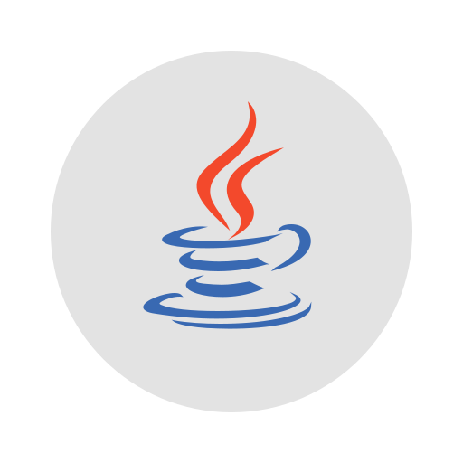

Hi, I'm Jonathan
I'm an experienced software developer with nearly 15 years of enterprise software experience. I've worked primarily with Java, Spring, and JavaScript, but I'm always eager to learn new things! Whether you're looking for a web developer, a backend engineer, or someone to work across the full stack, there's a good chance I'm your guy. Reach out to me by phone, text, email, or on LinkedIn, and let's see how we can work together.
Skills
- 


Experience
- Software Consultant | GoodNodes | Remote Jan 2024 - May 2024
- Azure: Pilot project to create web application to provision virtual machines for processing cryptocurrency transactions.
-
Software Developer & Salesforce Administrator
|
Prime33, Inc.
|
Costa Mesa, CA
 Sep 2022 - Dec 2023
Sep 2022 - Dec 2023
- Node.js: Built and maintained trigger data processor. Built HTML report generator.
- Salesforce Administration: Created numerous Salesforce Flows to automate tasks. Created Salesforce apps to assist agents with dialing and for items an administrator needed to use often. Added custom objects, fields, and record types. Various other changes as required.
- Salesforce Development: Wrote and maintained Apex code for various features. Designed and built SMS campaign manager to send messages automatically and route replies. Wrote SOQL queries. Created unit tests.
- Built External Marketing Subscriber/Intake proof-of concept, creating and calling REST APIs.
-
Senior Applications Developer
|
Oracle Corporation
|
Redwood Shores, CA
Apr 2015 - Sep 2022
- AnswerFlow (ADF, JavaScript, FreeMarker, Java, Spring, Eclipse, Maven): forked and modified Raphael JavaScript library to support dependency upgrade. Added custom JavaScript runtime support.
- Fusion Knowledge Home & Panel (ADF, Java): customization allowing placing of our widgets on various pages, various enhancements and bug fixes
- BUI/OKCS (OJET, TypeScript): created Search Results table, added cross-tab updates
- Oracle Automatic Test Scripts (OATS): learned framework, wrote scripts, trained developers
- Scrum Master (Jira): ran daily status meetings, organized Sprint Reviews, managed sprints and stories, wrote script to collect data and produce report of work done by team members
- Monthly Branch Merge Lead: organized, tested, and performed monthly merges of code from our team’s ADE development branch to the next level branch. Wrote instructions for team. Wrote Perl script to identify files modified by transactions to aid in code reviews.
- DevOps Rotation: performed various tasks needed to maintain and examine the Oracle cloud server fleet, including running various SQL queries. Wrote guide that became a valuable resource for the DevOps team.
- My Knowledge & KM UI (VBCS, OJET): Led the development-side internationalization effort, became our team’s expert on this topic, trained and assisted other teams. Designed and built facet filter component. Configured build system to automatically copy our team’s updated component code into other teams’ consuming branches. Performed Git repository migration. Added CDN bundling for our components.
-
Applications Developer
|
Oracle Corporation
|
El Segundo, CA
Oct 2011 - Apr 2015
- AnswerFlow (ADF, JavaScript, FreeMarker, Java, Spring, Eclipse, Maven): Worked on a small team to design and build this workflow creator. Worked on various features, including linking nodes, branch nodes, expression builder, spell checker, expandable text input, and item search. Added WebLogic Java Service Wrapper command line support and WebSphere sever support.
- Presented feature walkthrough and workshop at Comcast HQ for the 2nd major AnswerFlow release. Our team prevented a threatened Comcast abandonment of its Oracle contract in April 2013 and helped win Oracle an additional $4.2 million contract from Comcast in December 2014.
-
Software Developer
|
InQuira, Inc.
|
Los Angeles, CA
Jun 2009 - Sep 2011
- Built Flash application using Flex (ActionScript, MXML) as a front-end for a Java application running on a Tomcat server. Used XSD to model the data architecture.
- Improved company’s support website, using JSP, HTML, CSS and JavaScript.
-
Java Developer Intern
|
JavaGround USA, Inc.
|
Irvine, CA
Jun 2008 - Jun 2009
- Debugged builds of Java games for mobile devices.
- Added features to phone emulator applet. Created servlet to capture information from applet.
-
RoHS Directive Compliance Assistant
|
Omnitron Systems Technology
|
Irvine, CA
Jun 2006 - Oct 2006
- Tracked inventory. Updated product RoHS Directive compliance status in Excel spreadsheets.
-
JTRS Cluster 1 Support Person
|
Boeing
|
Anaheim, CA
Jun 2004 - Aug 2004
- Supported team building move.
- Assisted billing and quality control.
- Updated personnel roster.
Education
-
University of California, Irvine
Sep 2005 - Jun 2009
- Degree Earned: Bachelor’s of Science in Computer Science and Engineering.
- GPA: 3.844